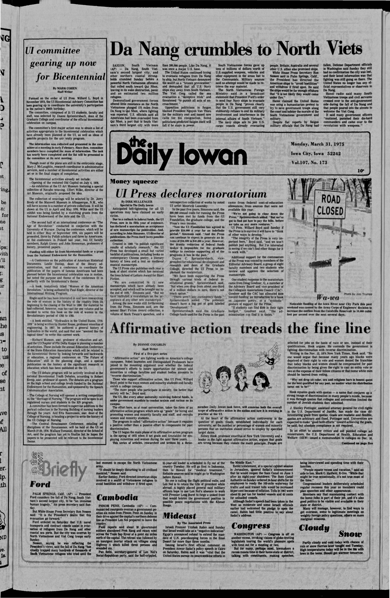

HN-704: Americans begin leaving Saigon ahead of its final fall
HN-704 · March 31, 1975 · War, Conflict & Security > Military Operations & Mobilization > Military deployments

page image (issue PDF)Recorded finding
Discovery narrative
Source: Banner-Graphic, p. 5 — original page; U.S. State Department, April 1975 evacuation records.
Report: “Americans Evacuate Saigon” described a Communist offensive, an initial evacuation of Americans, and perilous efforts to move South Vietnamese refugees from Da Nang.
Assessment: An earlier phase of evacuation, not the familiar final embassy helicopter withdrawal. The last emergency evacuation occurred April 29–30, when Saigon fell to North Vietnamese forces. This March 31 page helps reconstruct the drawn-out collapse rather than compressing it into one photograph from a month later.
Original archive images (3)
Authentic images retrieved from University of Iowa Libraries (The Daily Iowan), Newport Beach Public Library and Hoosier State Chronicles (Indiana State Library). Article crops are located using the archive's own OCR word coordinates and rendered at native crop resolution; article clips are assembled from the archive's own article-block images; page images marked "archive tiles" are stitched from the archive's own tiled page service at its 256-px tile cap; page images marked "issue PDF" are single pages rasterised from the archive's own issue PDF, with the page chosen by matching the headline against the PDF's text layer; page scans are reduced-size access renditions. No images were generated, mocked, or retouched.

University of Iowa Libraries (The Daily Iowan)
Open larger view · Archive viewer (full resolution)

Newport Beach Public Library
Open larger view · Archive viewer (full resolution)

Hoosier State Chronicles (Indiana State Library)
Open larger view · Archive viewer (full resolution)
Source acquisition
Status: Archive images acquired
Authentic archive-owned image renditions were retrieved for this record and are displayed above. The source-acquisition manifest preserves the original pre-acquisition feasibility assessment.
Original seed
URL (preserved verbatim): https://newspapers.library.in.gov/?a=d&d=BG19750331.1.5
Saved research report: Historical_Newspaper_Event_Research_703-727_2026-10-23.md
Evidence note: A newspaper report means a historical publication made a claim; it does not establish that claim as fact. Contemporary reporting is separated from later scholarly context and our own assessment.